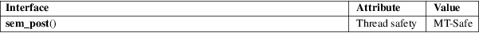

sem_post − unlock a semaphore
POSIX threads library (libpthread, −lpthread)
#include <semaphore.h>
int sem_post(sem_t *sem);
sem_post() increments (unlocks) the semaphore pointed to by sem. If the semaphore’s value consequently becomes greater than zero, then another process or thread blocked in a sem_wait(3) call will be woken up and proceed to lock the semaphore.
sem_post() returns 0 on success; on error, the value of the semaphore is left unchanged, −1 is returned, and errno is set to indicate the error.
|
EINVAL |
sem is not a valid semaphore. |
EOVERFLOW
The maximum allowable value for a semaphore would be exceeded.
For an explanation of the terms used in this section, see attributes(7).

POSIX.1-2008.
POSIX.1-2001.
sem_post() is async-signal-safe: it may be safely called within a signal handler.
See sem_wait(3) and shm_open(3).
sem_getvalue(3), sem_wait(3), sem_overview(7), signal−safety(7)